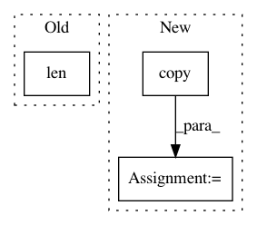

9a9a4d1fc4e47f9e8da7300829a2b0f4cc6151e9,finmarketpy/backtest/tradeanalysis.py,TradeAnalysis,run_arbitrary_sensitivity,#TradeAnalysis#,224
Before Change
contract_value_df = None
if len(assets) == 5: // for future use
contract_value_df = assets[4]
port_list = []
After Change
if reload_market_data:
asset_df, spot_df, spot_df2, basket_dict, contract_value_df = self._load_assets(trading_model, br = br)
br = copy.copy(trading_model.br)
port, ret_stats = self._run_strategy(trading_model, asset_df, spot_df, spot_df2, br, contract_value_df,
pretty_portfolio_names[i])
In pattern: SUPERPATTERN
Frequency: 3
Non-data size: 3
Instances
Project Name: cuemacro/finmarketpy
Commit Name: 9a9a4d1fc4e47f9e8da7300829a2b0f4cc6151e9
Time: 2018-04-25
Author: saeedamen@hotmail.com
File Name: finmarketpy/backtest/tradeanalysis.py
Class Name: TradeAnalysis
Method Name: run_arbitrary_sensitivity
Project Name: MLWave/kepler-mapper
Commit Name: 838a973d027426b83bf00cae07cb49ac35664035
Time: 2019-02-08
Author: daea4160@colorado.edu
File Name: kmapper/kmapper.py
Class Name: KeplerMapper
Method Name: _remove_duplicate_nodes
Project Name: stared/livelossplot
Commit Name: 4e3672726c0c88842b3aa32889767fb48c8fbb29
Time: 2018-11-26
Author: katarzyna.m.kanska@gmail.com
File Name: livelossplot/keras_plot.py
Class Name: PlotLossesKeras
Method Name: on_train_begin